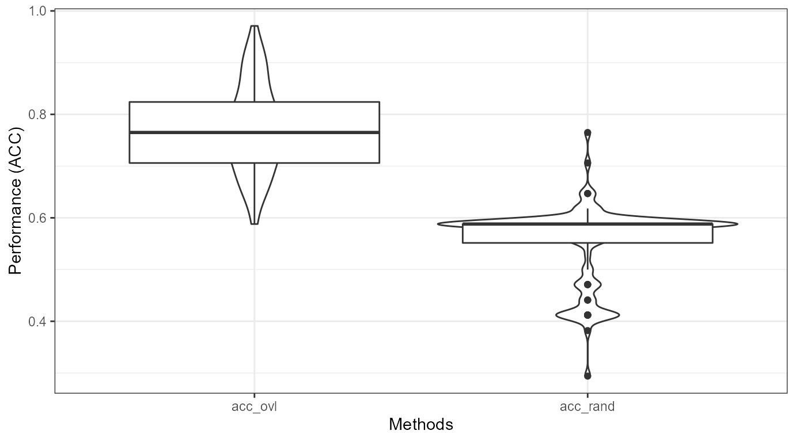

Feature selection
Seongyong Park
2020-11-27
featureselection.RmdIntroduction
ovltools can be used to select relevant features in high dimensional dataset. Here I provide a gentle introduction of feature selection with ovltools. golubEsets package provides microarray datasets used in Golub’s paper. The package already splitted train and test dataset so one can train and test machine learning model based on the “Golub_Train” dataset and test its performance with “Golub_Test” dataset. Due to the small number of samples, we recommend to use distribution fitting method for this dataset. We can select discriminative features of this dataset by ranking nonoverlapping of each gene between AML and CML classes.
library(golubEsets)
#> 挼㸷ʿ攼㸴挼㸷搼㸱 挼㸶搼㸰Ű挼㸱昼㸶戼㸸愼㸶 戼㸷ε昼㸹挼㸱搼㹦挼㸰Դϴ搼㸹: BiobaseNA#> 挼㸷ʿ攼㸴挼㸷搼㸱 挼㸶搼㸰Ű挼㸱昼㸶戼㸸愼㸶 戼㸷ε昼㸹挼㸱搼㹦挼㸰Դϴ搼㸹: BiocGenericsNA#> 挼㸷ʿ攼㸴挼㸷搼㸱 挼㸶搼㸰Ű挼㸱昼㸶戼㸸愼㸶 戼㸷ε昼㸹挼㸱搼㹦挼㸰Դϴ搼㸹: parallelNA#>
#> 戼㸴搼㸹挼㸰戼㹤挼㸰挼㸷 挼㸶搼㸰Ű挼㸱昼㸶戼㸸愼㸶 戼㹡挼㹥挼㸲昼㸸挼㸷մϴ搼㸹: 'BiocGenerics'NA#> The following objects are masked from 'package:parallel':
#>
#> clusterApply, clusterApplyLB, clusterCall, clusterEvalQ,
#> clusterExport, clusterMap, parApply, parCapply, parLapply,
#> parLapplyLB, parRapply, parSapply, parSapplyLB
#> The following objects are masked from 'package:stats':
#>
#> IQR, mad, sd, var, xtabs
#> The following objects are masked from 'package:base':
#>
#> anyDuplicated, append, as.data.frame, basename, cbind, colnames,
#> dirname, do.call, duplicated, eval, evalq, Filter, Find, get, grep,
#> grepl, intersect, is.unsorted, lapply, Map, mapply, match, mget,
#> order, paste, pmax, pmax.int, pmin, pmin.int, Position, rank,
#> rbind, Reduce, rownames, sapply, setdiff, sort, table, tapply,
#> union, unique, unsplit, which, which.max, which.min
#> Welcome to Bioconductor
#>
#> Vignettes contain introductory material; view with
#> 'browseVignettes()'. To cite Bioconductor, see
#> 'citation("Biobase")', and for packages 'citation("pkgname")'.
library(ovltools)
data("Golub_Train")
data("Golub_Test")
## Prepare dataset
gex_train = Golub_Train@assayData$exprs
gex_test = Golub_Test@assayData$exprs
label_train = Golub_Train@phenoData@data$ALL.AML
label_test = Golub_Test@phenoData@data$ALL.AML
train_dset = rbind(gex_train, label = label_train)
train_dset = t(train_dset)
train_dset = data.frame(train_dset)
train_dset$label <- factor(train_dset$label)
test_dset = rbind(gex_test, label = label_test)
test_dset = t(test_dset)
test_dset = data.frame(test_dset)
test_dset$label <- factor(test_dset$label)
train_dset[,1:(dim(train_dset)[2]-1)] = apply(train_dset[,1:(dim(train_dset)[2]-1)], 2, as.numeric)
test_dset[,1:(dim(test_dset)[2]-1)] = apply(test_dset[,1:(dim(test_dset)[2]-1)], 2, as.numeric)
## Get statistics
statistic = c()
for(i in 1:(dim(train_dset)[2]-1)){
tmp_ovl = ovl_distfit(train_dset[train_dset$label == 1,i], train_dset[train_dset$label == 2,i], "norm")
tmp_statistic = 1-tmp_ovl
statistic = c(statistic, tmp_statistic)
}
NOVL = data.frame(gid = colnames(train_dset)[1:length(colnames(train_dset))-1], novl = statistic)
NOVL = NOVL[order(NOVL$novl, decreasing = T),]
library(kableExtra)
knitr::kable(NOVL[1:5,], align='c') %>%
kable_styling(full_width=F, position = "center")| gid | novl | |
|---|---|---|
| 4847 | X95735_at | 0.8845874 |
| 2020 | M55150_at | 0.8617391 |
| 1745 | M16038_at | 0.8558998 |
| 1834 | M23197_at | 0.8542761 |
| 2043 | M57710_at | 0.8511434 |
library(dplyr)
#>
#> 戼㸴搼㸹挼㸰戼㹤挼㸰挼㸷 挼㸶搼㸰Ű挼㸱昼㸶戼㸸愼㸶 戼㹡挼㹥挼㸲昼㸸挼㸷մϴ搼㸹: 'dplyr'NA#> The following object is masked from 'package:kableExtra':
#>
#> group_rows
#> The following object is masked from 'package:Biobase':
#>
#> combine
#> The following objects are masked from 'package:BiocGenerics':
#>
#> combine, intersect, setdiff, union
#> The following objects are masked from 'package:stats':
#>
#> filter, lag
#> The following objects are masked from 'package:base':
#>
#> intersect, setdiff, setequal, union
library(ggplot2)
NOVL %>% ggplot(aes(x=1:length(novl), y=novl)) +
geom_point() +
theme_bw() +
xlab("Feature Ranking") +
ylab("Non Overlapping Index (NOI)")
Classification Performance
We can test whether ranked variables are meaningful or not by comparing performance of classifier trained either on the ranked variables or randomly selected variables. Here I used logistic regression as a testing method. In \(n=100\) times of random trial, I randomly selected \(5\) variables either from all variables or top \(100\) ranked variables by ovltools.
library(golubEsets)
library(ovltools)
data("Golub_Train")
data("Golub_Test")
## Prepare dataset
gex_train = Golub_Train@assayData$exprs
gex_test = Golub_Test@assayData$exprs
label_train = Golub_Train@phenoData@data$ALL.AML
label_test = Golub_Test@phenoData@data$ALL.AML
train_dset = rbind(gex_train, label = label_train)
train_dset = t(train_dset)
train_dset = data.frame(train_dset)
train_dset$label <- factor(train_dset$label)
test_dset = rbind(gex_test, label = label_test)
test_dset = t(test_dset)
test_dset = data.frame(test_dset)
test_dset$label <- factor(test_dset$label)
train_dset[,1:(dim(train_dset)[2]-1)] = apply(train_dset[,1:(dim(train_dset)[2]-1)], 2, as.numeric)
test_dset[,1:(dim(test_dset)[2]-1)] = apply(test_dset[,1:(dim(test_dset)[2]-1)], 2, as.numeric)
## Get statistics
# res = c()
# for(i in 1:(dim(train_dset)[2]-1)){
# if(i%%30==0) message(i)
# tmp_ovl = ovl.test(train_dset[train_dset$label == 1,i], train_dset[train_dset$label == 2,i], method="hist")
# res = rbind(res, tmp_ovl)
# }
# save(NOVL, file="../R/NOVL.RData")
# NOVL = data.frame(gid = colnames(train_dset)[1:length(colnames(train_dset))-1], novl = 1-res[,1], pval=res[,2])
load("../data/NOVL.RData")
library(dplyr)
NOVL_filt = NOVL %>% dplyr::filter(pval<0.05) %>% arrange(pval, desc(novl))
# library(kableExtra)
# knitr::kable(NOVL[1:5,], align='c') %>%
# kable_styling(full_width=F, position = "center")
# library(dplyr)
# library(ggplot2)
# NOVL %>% ggplot(aes(x=1:length(novl), y=novl)) +
# geom_point() +
# theme_bw() +
# xlab("Feature Ranking") +
# ylab("Non Overlapping Index (NOI)")
library(glmnet)
#> 挼㸷ʿ攼㸴挼㸷搼㸱 挼㸶搼㸰Ű挼㸱昼㸶戼㸸愼㸶 戼㸷ε昼㸹挼㸱搼㹦挼㸰Դϴ搼㸹: MatrixNA#> Loaded glmnet 4.0-2
# select top n features
acc_all = list()
for (i in 1:100){
ovl_var = sample(NOVL_filt$gid[1:100], 5)
rand_var = sample(colnames(train_dset)[-1], 5)
outcome = "label"
ovl_model = cv.glmnet(as.matrix(train_dset[,colnames(train_dset) %in% ovl_var]), alpha=0,
train_dset$label, family='binomial', type.measure="class")
ovl_pred = predict(ovl_model, newx = as.matrix(test_dset[,colnames(test_dset) %in% ovl_var]),
s = "lambda.min", type='class')
rand_model = cv.glmnet(as.matrix(train_dset[,colnames(train_dset) %in% rand_var]), alpha=0,
train_dset$label, family='binomial', type.measure="class")
rand_pred = predict(ovl_model, newx = as.matrix(test_dset[,colnames(test_dset) %in% rand_var]),
s = "lambda.min", type='class')
# confusion matrix
cm_ovl = table(test_dset$label, factor(ovl_pred, levels=c(1,2)))
cm_rand = table(test_dset$label, factor(rand_pred, levels=c(1,2)))
# performance
acc_ovl = round((cm_ovl[1,1]+cm_ovl[2,2])/sum(cm_ovl), 3)
acc_rand = round((cm_rand[1,1]+cm_rand[2,2])/sum(cm_rand), 3)
acc_all[[i]] = c(i, acc_ovl, acc_rand)
}
#> Warning in lognet(x, is.sparse, ix, jx, y, weights, offset, alpha, nobs, : one
#> multinomial or binomial class has fewer than 8 observations; dangerous ground
#> Warning in lognet(x, is.sparse, ix, jx, y, weights, offset, alpha, nobs, : one
#> multinomial or binomial class has fewer than 8 observations; dangerous ground
#> Warning in lognet(x, is.sparse, ix, jx, y, weights, offset, alpha, nobs, : one
#> multinomial or binomial class has fewer than 8 observations; dangerous ground
#> Warning in lognet(x, is.sparse, ix, jx, y, weights, offset, alpha, nobs, : one
#> multinomial or binomial class has fewer than 8 observations; dangerous ground
#> Warning in lognet(x, is.sparse, ix, jx, y, weights, offset, alpha, nobs, : one
#> multinomial or binomial class has fewer than 8 observations; dangerous ground
acc_all = do.call(rbind, acc_all)
colnames(acc_all) = c("ntrials", "acc_ovl", "acc_rand")
acc_all = as.data.frame(acc_all)
library(ggplot2)
library(tidyr)
#>
#> 戼㸴搼㸹挼㸰戼㹤挼㸰挼㸷 挼㸶搼㸰Ű挼㸱昼㸶戼㸸愼㸶 戼㹡挼㹥挼㸲昼㸸挼㸷մϴ搼㸹: 'tidyr'NA#> The following objects are masked from 'package:Matrix':
#>
#> expand, pack, unpack
acc_all %>% tidyr::gather(method, value, -ntrials) %>% ggplot(aes(x=method, y=value)) +
ggplot2::geom_violin() +
ggplot2::geom_boxplot() +
theme_bw() +
xlab("Methods") +
ylab("Performance (ACC)")